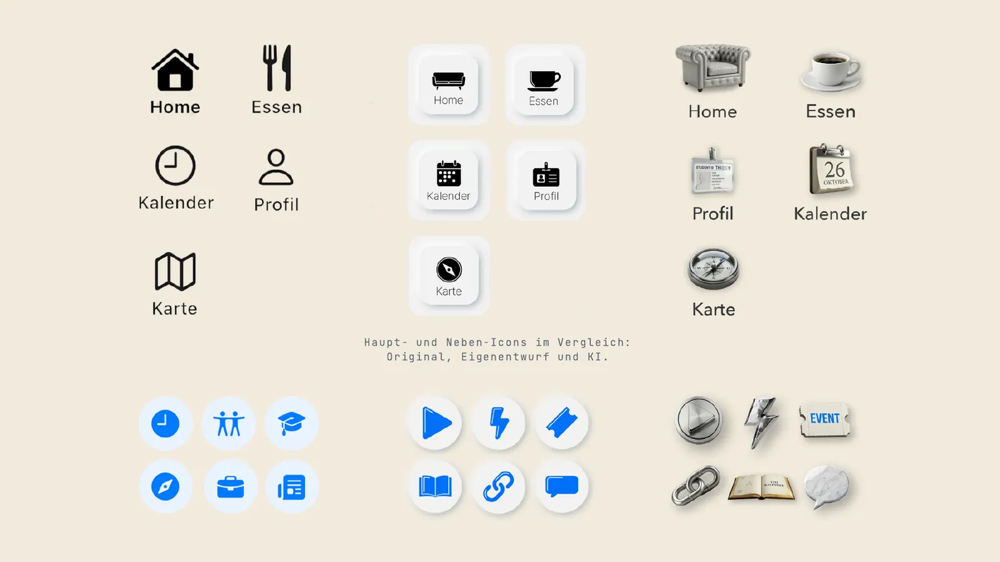
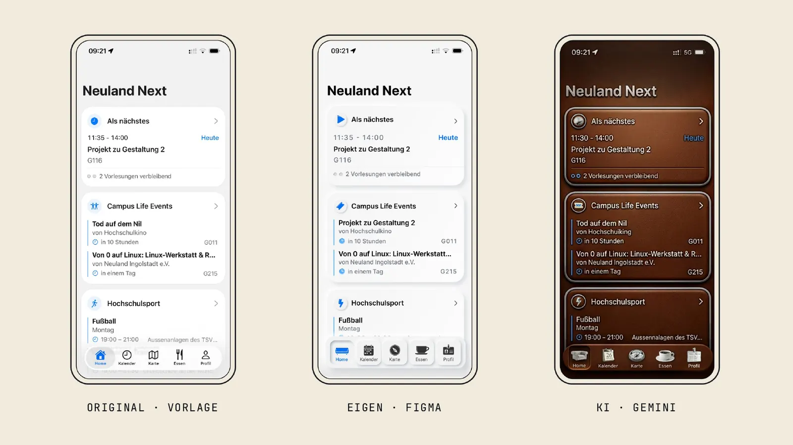
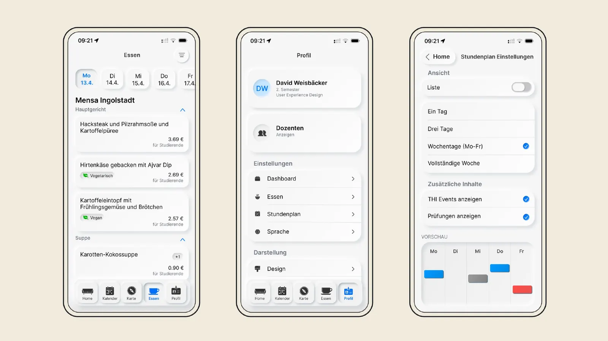
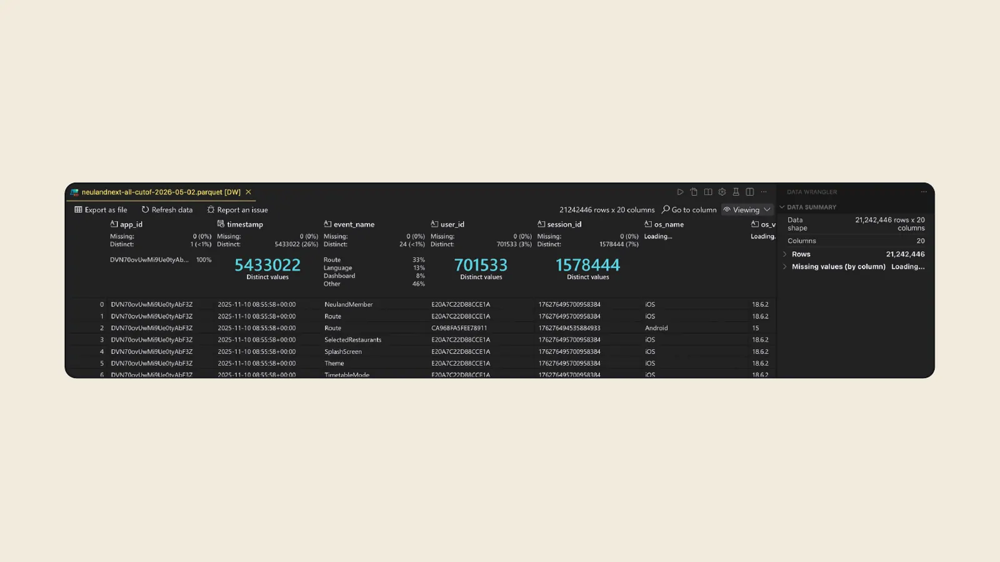
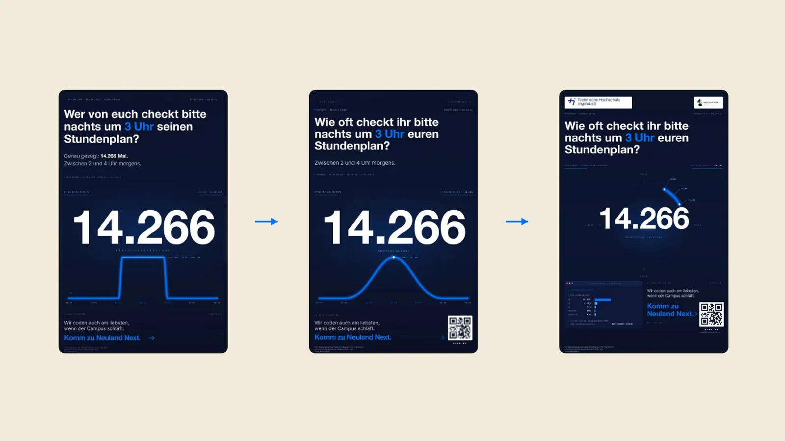
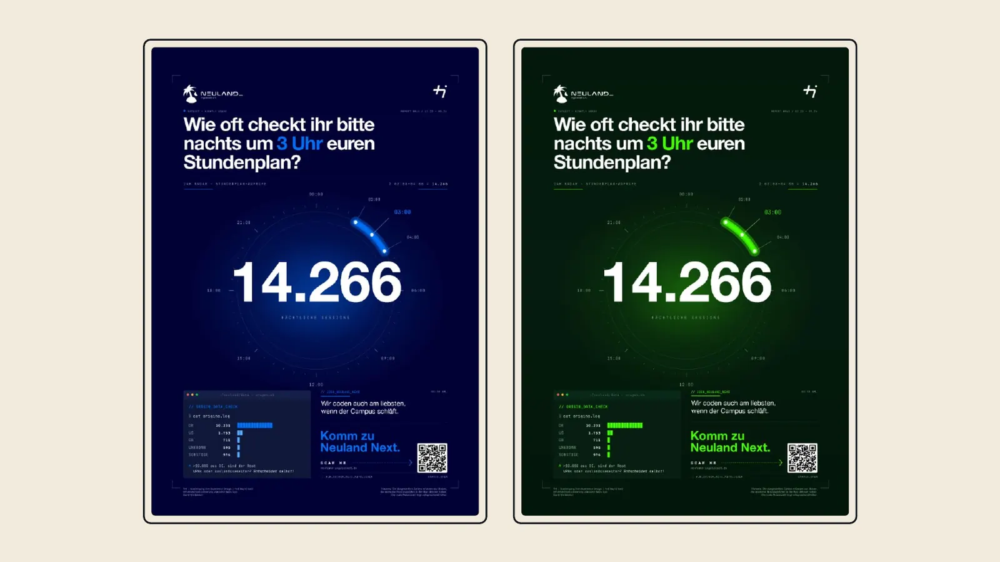

For my Gestaltung II course I worked on Neuland Next — the student-built app used across THI. Icons and screens I designed twice, fully by hand and fully with AI. For the data poster I picked the method myself, based on what the first two had shown.
AI delivers the structure in a fraction of the time. Consistency and quality still come from the designer — the future is hybrid.
Eleven app icons, twice: vectorised by hand in Illustrator (neumorphic) and generated with Gemini (skeuomorphic). AI cut the time to about a fifth — but it generates far better than it fine-tunes. Often a fresh prompt beats forcing a small detail.
Four app screens: built component by component in Figma, then generated with Gemini and refined in Photoshop. Screen by screen, the AI lost the visual thread — asking for all four in one single image forced consistency. That workaround was the breakthrough.
Here the method was my call — and the first two experiments made it: AI. I analysed 21.2 million rows of app data with Python and Pandas, had Claude write the layout as SVG code and finished it print-ready in Illustrator. The finding: 14,266 timetable checks between 2 and 4 a.m.
The poster and the documentation were only built with AI — their by-hand hours are my own estimates. Icons and screens were really done both ways.






From my 38-page project documentation · figures in German, notes in English